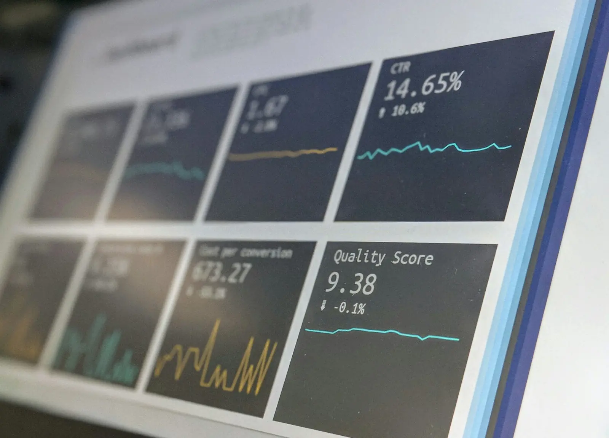

We run your IT.You run your business.
Ku Tech is a managed IT partner that uses AI to watch, fix and improve your systems, backed by real people 24/7/365. Your team stays up and running, and you stay focused on the work that grows your company.
Technology should be the part of your day you never think about.
You didn't start your company to reset passwords, chase software updates or worry about ransomware. We take all of that off your plate, with a team that puts your business first.
- Proactive, not reactiveAI-driven monitoring catches problems early, so fewer things break in the first place.
- Support 24/7/365Day or night, weekday or holiday, you reach a real person who knows your setup.
- Built around your budgetA customized plan that fits your needs, with no jargon and no surprises.
Everything your business runs on, covered.
One partner for the whole stack, from the laptop on your desk to the datacenter and the cloud your data lives in.
Infrastructure management and 24/7/365 support
Help any hour of the day for your people, devices and systems.
AI-powered monitoring and automation
Round-the-clock watch that fixes issues before they cause downtime.
Cybersecurity and response management
Layered protection, continuous testing and a plan for when things go wrong.
Cloud solutions and Microsoft 365
Assessment, migration and training for email, files and apps in the cloud.
Backup and disaster recovery
Tested backups and a plan to get you back online fast.
Datacenter and infrastructure
Assessments, installations and the equipment that keeps you connected.
Equipment management
Buying, tracking and deploying the right hardware.
Mobile workforce management
Secure, productive teams wherever they work.
Technology reviews and IT strategy
Audits, expert recommendations and a roadmap that fits your budget.
Project management and execution
Smooth technology rollouts, coordinated end to end.
Carrier services analysis and partnerships
The right internet, phone and data providers at the right price.
Compliance support
Controls and documentation to help you meet industry requirements.
How our AI keeps you running.
Smart automation does the watching. Our engineers make the calls. Together they keep small problems from turning into lost days.
Detect
AI monitors your servers, devices, network and cloud accounts around the clock and flags anything unusual.
Diagnose
It pinpoints the likely cause in seconds, pulling together signals a person would take hours to connect.
Resolve
Routine fixes run automatically. Anything bigger goes straight to a Ku Tech engineer with the full picture.
Report and improve
You get clear reports, and every incident teaches the system how to prevent the next one.

Built for businesses that can't afford downtime.
Whether you have five people or two hundred, we tailor support to how your business works, including the rules your industry has to follow.
Find out where your IT stands.
Our free IT assessment reviews your security, backups and systems, then gives you a clear, no-obligation plan.